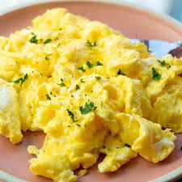

Homepage
Scrambled Eggs

Description:
Quick, easy, and delicious scrambled eggs! Just a couple eggs and some standard at home ingredients to make this family pleasing breakfast dish!
Ingredients
- Eggs - 4
- American Cheese - 1 slice
- Milk - 1 tbsp
- Salt - 1 tsp
- Pepper - 1 tsp
- Dried Basil - 1 tsp
- Butter - 1 tbsp
Steps
- heat pan on medium high heat
- while pan is heating, scramble eggs and ingredients together:
- Get a bowl large enough to fit the 4 cracked eggs with some room
- Crack the 4 eggs into the bowl, throwing the shells into the trash
- add milk, cheese, salt, pepper, and dried basil to the eggs
- whisk together with fork until the yolks are broken and everything is roughly mixed
- melt butter in hot pan
- pour egg mixture into butter pan
- stir immediately with wooden spoon or rubber spatula
- let cook for 10 seconds, then stir for 5 seconds
- repeat above step until eggs are just solidified and no longer runny
- remove from heat and let rest for 1 minute
- Enjoy!